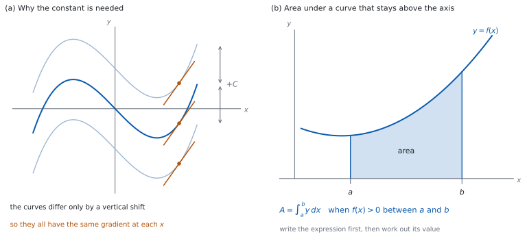

SL 5.5 — Introduction to integration（原始関数・積分定数・面積）
- anti-derivative（原始関数）が「微分するともとにもどる関数」であることを説明できる。
- \(\displaystyle\int x^{n}\,dx\) を \(n \ne -1\) の整数について計算できる。
- 和と定数倍を、項ごとに積分できる。
- constant of integration（積分定数）\(C\) がなぜ要るのかを説明できる。
- boundary condition（境界条件）から \(C\) の値を決められる。
- 原始関数・定積分・面積のつながりを述べられる。
- 分数を、まず \(ax^{n}\) の和の形に直してから積分できる。
- \(f(x) > 0\) の範囲で、曲線と \(x\) 軸ではさまれた部分の面積を、まず式で書ける。
The idea
1. 微分の逆をたどる
\(F'(x) = f(x)\) となる \(F\) を、\(f\) の anti-derivative（原始関数）といいます。
「微分するともとにもどる関数」です。 \(f(x) = 2x\) なら、\(F(x) = x^{2}\) が \(1\) つの原始関数です。
この作業を integration（積分）といい、\(\displaystyle\int\) の記号で書きます。
\[ \int f(x)\,dx = F(x) + C \tag{1}\]
\(dx\) は「\(x\) について」という印です。 どの文字で積分するかを示しています。
2. 積分定数
原始関数は \(1\) つに決まりません（図 1 (a)）。
\(x^{2}\) も \(x^{2} + 5\) も \(x^{2} - 3\) も、微分すると \(2x\) です。定数は微分で消えるからです（SL 5.3）。
だから \(+ C\) を付けます。 \(C\) を constant of integration（積分定数）といいます。
\(C\) を書き忘れないでください。 indefinite integral（不定積分）の答えには、必ず付けます。上下に数が付いていない積分のことです。
グラフで見ると、縦にずらした曲線の束です。 どれも同じ形なので、どの \(x\) でも傾きが同じです。
3. べき乗の積分
\[ \int x^{n}\,dx = \frac{x^{n+1}}{n+1} + C, \qquad n \ne -1 \tag{2}\]
公式集の 5.5 の欄に、Integral of \(x^{n}\) として 式 2 が印刷されています。おぼえる必要はありませんが、どこにあるかは知っておいてください。
やることは \(2\) つです。 指数を \(1\) 増やして、その新しい指数で割ります。微分とちょうど逆向きです。
\(n = -1\) は使えません。 \(n + 1 = 0\) になり、\(0\) で割ることになるからです。\(\displaystyle\int \frac{1}{x}\,dx\) は SL 5.10a で扱います。
\(n\) が負のときは、\(x \ne 0\) のところだけで使えます（SL 5.3）。この形の問題文に「for \(x \ne 0\)」と書いてあるのは、そのためです。
4. 和と定数倍
項ごとに積分して、そのまま足し引きします。 定数倍はそのまま残ります。
\[ \int \bigl(a f(x) + b g(x)\bigr)\,dx = a\int f(x)\,dx + b\int g(x)\,dx \tag{3}\]
式 3 は公式集にありません。 和と定数倍については、そのまま項ごとに計算してよい、と知っておいてください。
\(C\) は最後に \(1\) つだけ書きます。 項ごとに定数を付ける必要はありません。まとめて \(1\) つの \(C\) にできます。
\(\displaystyle\int k\,dx = kx + C\) です。 定数 \(k\) は \(kx^{0}\) なので、式 2 で \(n = 0\) とすると \(\dfrac{x^{1}}{1} = x\) です。
5. 境界条件で \(C\) を決める
「ある \(x\) でのある \(y\) の値」が与えられると、\(C\) が \(1\) つに決まります。これを boundary condition（境界条件）といいます。
| 歩 | すること |
|---|---|
| \(1\) | 積分して \(+ C\) の形の答えを書く |
| \(2\) | 与えられた \(x\) と \(y\) を代入する |
| \(3\) | \(C\) について解き、答えに入れる |
代入するのは、積分したあとの式です。 積分する前の式に入れても、\(C\) は出てきません。
答えには \(C\) の値を入れて書きます。 \(+C\) のまま残さないでください。
6. 面積とのつながり
\(f(x) > 0\) である \(a \leq x \leq b\) で、曲線 \(y = f(x)\)、\(x\) 軸、直線 \(x = a\)、直線 \(x = b\) でかこまれた部分の面積は
\[ A = \int_{a}^{b} y\,dx \tag{4}\]
です（図 1 (b)）。
公式集の 5.5 の欄に、Area between a curve \(y = f(x)\) and the \(x\)-axis, where \(f(x) > 0\) として 式 4 が印刷されています。「\(f(x) > 0\)」という条件も、いっしょに印刷されています。
この条件が要ります。 曲線が \(x\) 軸より下にある部分をふくむと、この式のままでは面積になりません。その場合は SL 5.11b で扱います。
\(\displaystyle\int_{a}^{b}\) は definite integral（定積分）です。 上下に数が付いていて、答えは \(1\) つの数になります。\(+C\) は付きません。
このページでは、定積分の値は電卓で出します。 手で計算する方法は SL 5.11a です。
7. まず式を書く
Students are expected to first write a correct expression before calculating the area.
答案には、まず積分の式を書いてください。 値だけを書くと、どの範囲のどの曲線を考えたのかが伝わりません。
\[ A = \int_{2}^{6} (3x^{2} + 4)\,dx \]
のように、曲線の式と上下の数を、はっきり書きます。
上が大きいほう、下が小さいほうです。 上下を入れかえると、符号が変わります。
原始関数を求める計算は、電卓なしで出ます。 積分定数と境界条件も同じです。
定積分の値は、この項目では GDC で出します。 ただし、式を先に書くことが求められます。 定積分を手で計算するのは SL 5.11a からです。
この項目では、定積分の値そのものを電卓で出します。グラフ画面に \(y = f(x)\) をかき、\(a\) から \(b\) までの範囲で曲線が \(x\) 軸より上にあることを目で確かめてから、値を出してください。
答案に書くのは、積分の式と、出た値です。 電卓の操作は書きません。

Why it works
なぜ、\(+C\) が要るのでしょうか。 定数は微分すると消えるからです。
\(F(x)\) が原始関数なら、\(F(x) + C\) も原始関数です。微分すると \(C\) の部分が \(0\) になり、どちらも同じ \(f(x)\) にもどります。
逆に、\(1\) つの区間の上では、原始関数どうしのちがいは定数だけです。 \(F\) と \(G\) が、途切れのない \(1\) つの区間でどちらも \(f\) の原始関数なら、\((F - G)' = f - f = 0\) です。その区間では \(F - G\) の傾きがどこでも \(0\) なので、値が変わりません。つまり \(F - G\) はその区間で定数です（SL 5.2）。だから \(+C\) で、その区間の原始関数を全部書きつくせます。
\(x \ne 0\) のように、\(x\) の動ける範囲が \(2\) つに分かれているときは、区間ごとに定数です。 SL では、問題文が指定した範囲の中で \(C\) を \(1\) つ書けば十分です。
なぜ、指数を \(1\) 増やして割るのでしょうか。 微分してみると分かります。
\[ \frac{d}{dx}\left(\frac{x^{n+1}}{n+1}\right) = \frac{(n+1)x^{n}}{n+1} = x^{n} \]
\(n+1\) で割ってあるのは、微分のときに前に出てくる \(n+1\) を打ち消すためです。
なぜ \(n = -1\) が除かれるのでしょうか。 \(n + 1 = 0\) になり、\(\dfrac{x^{0}}{0}\) という書けない式になるからです。\(\dfrac{1}{x}\) の原始関数は、べき乗の形では書けません。
なぜ、面積と原始関数がつながるのでしょうか。 \(a\) から \(x\) までの面積を \(A(x)\) とおいて、その増え方を見ます。
\(x\) を少しだけ \(h\) 増やすと、面積は幅 \(h\) の細い帯のぶんだけ増えます。その帯は、高さが \(f(x)\) に近い長方形にほぼ等しいので
\[ A(x + h) - A(x) \approx f(x) \times h \]
です。両辺を \(h\) で割ると \(\dfrac{A(x+h) - A(x)}{h} \approx f(x)\) となり、\(h\) を \(0\) に近づけると \(A'(x) = f(x)\) になります。
つまり、面積を表す関数は \(f\) の原始関数です。 だから面積は、原始関数の値の差で求められます。
このページでは、\(\displaystyle\int_{a}^{b}\) という記号を、この面積の名前として使っています。 その値が \(F(b) - F(a)\) で計算できることは、SL 5.11a で扱います。
この議論には \(f(x) > 0\) が要ります。 \(f\) が負のところでは帯の「高さ」が負になり、面積ではなく符号の付いた量が出てきます。そこが SL 5.11b の話です。
Worked examples
問題文は英語です。意味が理解できなかったら、問題文の下の「日本語訳」を開いてください。解説は日本語です。
原始関数を求める計算は電卓なしです。 定積分の値だけ、電卓で出します。
答えは、割り切れるときはその値を、割り切れないときは有効数字 \(3\) 桁（\(3\) significant figures）で書きます。
例題 1 Find \(\displaystyle\int (6x^{2} - 4x + 5)\,dx\).
日本語訳
\(\displaystyle\int (6x^{2} - 4x + 5)\,dx\) を求めなさい。
項ごとに 式 2 を使います。
| 項 | 指数を \(1\) 増やす | 新しい指数で割る |
|---|---|---|
| \(6x^{2}\) | \(6x^{3}\) | \(\dfrac{6x^{3}}{3} = 2x^{3}\) |
| \(-4x\) | \(-4x^{2}\) | \(\dfrac{-4x^{2}}{2} = -2x^{2}\) |
| \(5\) | \(5x^{1}\) | \(\dfrac{5x}{1} = 5x\) |
\[ \int (6x^{2} - 4x + 5)\,dx = 2x^{3} - 2x^{2} + 5x + C \]
検算（微分してもどす）。 \(\dfrac{d}{dx}(2x^{3} - 2x^{2} + 5x + C) = 6x^{2} - 4x + 5\) ✓ もとの式にもどりました。
検算（\(C\) を書いたか）。 上下に数が付いていないので、\(+C\) が要ります ✓（第 2 節）
検算（指数）。 \(2\)、\(1\)、\(0\) が \(3\)、\(2\)、\(1\) に上がっています ✓ 微分とは逆向きです。
検算（値で見当をつける）。 \(x = 0\) から \(1\) までなら、もとの式 \(6x^{2} - 4x + 5\) の値は \(\dfrac{13}{3}\) と \(7\) の間です。原始関数の差は \((2 - 2 + 5) - 0 = 5\) ✓ その間に入っています。
\[\int (6x^{2} - 4x + 5)\,dx = 2x^{3} - 2x^{2} + 5x + C\]
例題 2 It is given that \(\dfrac{dy}{dx} = 4x^{3} - 6x\), and that \(y = 5\) when \(x = 2\). Find \(y\) in terms of \(x\).
日本語訳
\(\dfrac{dy}{dx} = 4x^{3} - 6x\) であり、\(x = 2\) のとき \(y = 5\) です。\(y\) を \(x\) の式で表しなさい。
\(1\) 歩目。 積分します。
\[ y = \int (4x^{3} - 6x)\,dx = x^{4} - 3x^{2} + C \]
\(2\) 歩目。 \(x = 2\)、\(y = 5\) を代入します。
\[ 5 = 2^{4} - 3 \times 2^{2} + C = 16 - 12 + C = 4 + C \]
\(3\) 歩目。 \(C\) を求めて、答えに入れます。
\[ C = 1 \quad \Longrightarrow \quad y = x^{4} - 3x^{2} + 1 \]
検算（微分してもどす）。 \(\dfrac{d}{dx}(x^{4} - 3x^{2} + 1) = 4x^{3} - 6x\) ✓
検算（条件を満たすか）。 \(x = 2\) のとき \(16 - 12 + 1 = 5\) ✓ 与えられた値と合っています。
検算（\(2^{4}\) と \(2^{2}\)）。 \(2^{4} = 16\)、\(3 \times 2^{2} = 12\) ✓
検算（\(C\) が残っていないか）。 答えに \(C\) の文字がありません ✓ 値が決まったので、数で書きます。
\[y = x^{4} - 3x^{2} + C\] \[5 = 16 - 12 + C \ \Rightarrow \ C = 1\] \[y = x^{4} - 3x^{2} + 1\]
例題 3 The region \(R\) is bounded by the curve \(y = x^{2} + 1\), the \(x\)-axis, and the lines \(x = 1\) and \(x = 3\).
(a) Write down an expression for the area of \(R\).
(b) Find the area of \(R\), giving your answer correct to \(3\) significant figures.
(c) The axes are measured in centimetres. Interpret the answer to part (b) in this context.
日本語訳
領域 \(R\) は、曲線 \(y = x^{2} + 1\)、\(x\) 軸、直線 \(x = 1\) と \(x = 3\) でかこまれています。
(a) \(R\) の面積を表す式を書きなさい。
(b) \(R\) の面積を、有効数字 \(3\) 桁で求めなさい。
(c) 軸の目もりはセンチメートルです。(b) の答えがこの場面で何を表すかを説明しなさい。
(a) \(1 \leq x \leq 3\) で \(x^{2} + 1 \geq 2 > 0\) なので、式 4 が使えます。
\[ A = \int_{1}^{3} (x^{2} + 1)\,dx \]
(b) 値は電卓で出します（第 6 節）。
\[ A = 10.7 \ (3 \text{ s.f.}) \]
(c) Interpret なので、英語で意味を書きます。
試験ではこう書く
The value \(10.7\) is an area, so its units are square centimetres. It is the area of the region between the curve and the \(x\)-axis from \(x = 1\) to \(x = 3\), so that region covers about \(10.7\ \mathrm{cm}^{2}\) of the plane.
（\(10.7\) は面積なので、単位は平方センチメートルである。これは \(x = 1\) から \(x = 3\) までの、曲線と \(x\) 軸の間の領域の面積であり、その領域はおよそ \(10.7\ \mathrm{cm}^{2}\) を占める、という意味です。）
検算（\(f(x) > 0\) か）。 \(x^{2} \geq 0\) なので \(x^{2} + 1 \geq 1 > 0\) ✓ どの \(x\) でも正です。
検算（長方形ではさむ）。 幅は \(3 - 1 = 2\)、高さは \(x = 1\) で \(2\)、\(x = 3\) で \(10\) です。面積は \(2 \times 2 = 4\) より大きく、\(2 \times 10 = 20\) より小さいはずです ✓ \(10.7\) はその間にあります。
検算（上下の順）。 下が \(1\)、上が \(3\) です ✓ 入れかえると符号が変わります。
検算（\(+C\) を書いていないか）。 定積分なので \(C\) は付きません ✓
(a) \[A = \int_{1}^{3} (x^{2} + 1)\,dx\]
(b) \(A = 10.7\)
(c) the units are square centimetres, so the region between the curve and the \(x\)-axis from \(x = 1\) to \(x = 3\) has area about \(10.7\ \mathrm{cm}^{2}\)
例題 4 Find \(\displaystyle\int \frac{x^{3} + 2}{x^{2}}\,dx\), for \(x \ne 0\). Verify your answer by differentiating it.
日本語訳
\(\displaystyle\int \frac{x^{3} + 2}{x^{2}}\,dx\)（\(x \ne 0\)）を求めなさい。答えを微分して、正しいことを確かめなさい。
まず和の形に直します（SL 5.3）。分母が \(1\) 項なので、項ごとに分けられます。
\[ \frac{x^{3} + 2}{x^{2}} = \frac{x^{3}}{x^{2}} + \frac{2}{x^{2}} = x + 2x^{-2} \]
項ごとに積分します。
\[ \int x\,dx = \frac{x^{2}}{2}, \qquad \int 2x^{-2}\,dx = \frac{2x^{-1}}{-1} = -2x^{-1} \]
\[ \int \frac{x^{3} + 2}{x^{2}}\,dx = \frac{x^{2}}{2} - \frac{2}{x} + C \]
確かめます。
\[ \frac{d}{dx}\left(\frac{x^{2}}{2} - 2x^{-1} + C\right) = x + 2x^{-2} = \frac{x^{3} + 2}{x^{2}} \]
もとの式にもどりました。
検算（\(-2\) の指数）。 \(-2\) を \(1\) 増やすと \(-1\) です ✓ \(-3\) ではありません。
検算（割る数）。 新しい指数 \(-1\) で割るので、符号が変わります ✓ \(\dfrac{2}{-1} = -2\) です。
検算（\(1\) つの値で）。 \(x = 1\) のとき、もとの式は \(\dfrac{1 + 2}{1} = 3\)、直した式は \(1 + 2 = 3\) ✓
検算（\(n = -1\) を使っていないか）。 出てきた指数は \(1\) と \(-2\) です ✓ どちらも \(-1\) ではないので、式 2 が使えます。
\[\frac{x^{3} + 2}{x^{2}} = x + 2x^{-2}\] \[\int \frac{x^{3} + 2}{x^{2}}\,dx = \frac{x^{2}}{2} - \frac{2}{x} + C\] \[\frac{d}{dx}\left(\frac{x^{2}}{2} - 2x^{-1}\right) = x + 2x^{-2} \ \checkmark\]
Common errors
上下に数が付いていない積分には、必ず \(+C\) が要ります（第 2 節）。
積分では \(1\) 増やします（第 3 節）。微分と逆向きです。
指数を増やしただけでは足りません（第 3 節）。増やした指数で割ります。
代入するのは積分したあとの式です（第 5 節）。前の式には \(C\) がありません。
上下に数が付いた積分の答えは \(1\) つの数です（第 6 節）。\(C\) は付きません。
Exercises
各問題に、折りたたみが \(3\) つ付いています。日本語訳、解答例（答案用紙に書くべきこと。英語です。英語の答案例が付くものもあります）、解説（なぜそうなるか。日本語です）。
まず自分で解いて、次に解答例と見くらべてください。解説は、合わなかったときだけ開けば十分です。
1 Find \(\displaystyle\int (4x + 3)\,dx\).
日本語訳
\(\displaystyle\int (4x + 3)\,dx\) を求めなさい。
\[\int (4x + 3)\,dx = 2x^{2} + 3x + C\]
2 Find \(\displaystyle\int (x^{5} - 3x^{2})\,dx\).
日本語訳
\(\displaystyle\int (x^{5} - 3x^{2})\,dx\) を求めなさい。
\[\int (x^{5} - 3x^{2})\,dx = \frac{x^{6}}{6} - x^{3} + C\]
指数を \(1\) 増やしてから割ります（第 3 節）。
検算（微分してもどす）。 \(\dfrac{d}{dx}\left(\dfrac{x^{6}}{6} - x^{3}\right) = x^{5} - 3x^{2}\) ✓
検算（\(-3x^{2}\) の項）。 指数は \(3\) になり、\(\dfrac{-3}{3} = -1\) ✓ 係数が \(-1\) なので \(-x^{3}\) です。
検算（\(\dfrac{1}{6}\)）。 \(x^{5}\) の指数を \(1\) 増やすと \(6\) で、\(6\) で割ります ✓
3 Find \(\displaystyle\int \frac{x^{4} + 3}{x^{2}}\,dx\), for \(x \ne 0\).
日本語訳
\(\displaystyle\int \dfrac{x^{4} + 3}{x^{2}}\,dx\)（\(x \ne 0\)）を求めなさい。
\[\frac{x^{4} + 3}{x^{2}} = x^{2} + 3x^{-2}\]
\[\int \frac{x^{4} + 3}{x^{2}}\,dx = \frac{x^{3}}{3} - \frac{3}{x} + C\]
分母が \(1\) 項なので、項ごとに分けてから積分します（SL 5.3）。
検算（微分してもどす）。 \(\dfrac{d}{dx}\left(\dfrac{x^{3}}{3} - 3x^{-1}\right) = x^{2} + 3x^{-2}\) ✓
検算（\(3x^{-2}\) の項）。 指数を \(1\) 増やすと \(-1\)、それで割るので \(\dfrac{3}{-1} = -3\) ✓ 符号が変わります。
検算（\(n = -1\) を使っていないか）。 出てきた指数は \(2\) と \(-2\) です ✓ どちらも \(-1\) ではありません。
検算（\(1\) つの値で）。 \(x = 1\) のとき、もとの式は \(\dfrac{1 + 3}{1} = 4\)、直した式は \(1 + 3 = 4\) ✓
4 Find \(\displaystyle\int 5x^{-3}\,dx\), for \(x \ne 0\).
日本語訳
\(\displaystyle\int 5x^{-3}\,dx\)（\(x \ne 0\)）を求めなさい。
\[\int 5x^{-3}\,dx = \frac{5x^{-2}}{-2} + C = -\frac{5}{2x^{2}} + C\]
5 It is given that \(\dfrac{dy}{dx} = 6x - 2\), and that \(y = 7\) when \(x = 2\). Find \(y\) in terms of \(x\).
日本語訳
\(\dfrac{dy}{dx} = 6x - 2\) であり、\(x = 2\) のとき \(y = 7\) です。\(y\) を \(x\) の式で表しなさい。
\[y = 3x^{2} - 2x + C\]
\[7 = 12 - 4 + C \ \Rightarrow \ C = -1\]
\[y = 3x^{2} - 2x - 1\]
\(3\) 歩の手順どおりです（第 5 節）。
検算（条件を満たすか）。 \(x = 2\) で \(12 - 4 - 1 = 7\) ✓
検算（微分してもどす）。 \(\dfrac{d}{dx}(3x^{2} - 2x - 1) = 6x - 2\) ✓
検算（\(C\) の符号）。 \(8 + C = 7\) なので \(C = -1\) ✓ 負になることもあります。
6 It is given that \(f'(x) = 3x^{2} + 4x\) and \(f(1) = 0\). Find \(f(x)\).
日本語訳
\(f'(x) = 3x^{2} + 4x\)、\(f(1) = 0\) です。\(f(x)\) を求めなさい。
\[f(x) = x^{3} + 2x^{2} + C\]
\[0 = 1 + 2 + C \ \Rightarrow \ C = -3\]
\[f(x) = x^{3} + 2x^{2} - 3\]
\(f(1) = 0\) が境界条件です（第 5 節）。
検算（条件を満たすか）。 \(f(1) = 1 + 2 - 3 = 0\) ✓
検算（微分してもどす）。 \(\dfrac{d}{dx}(x^{3} + 2x^{2} - 3) = 3x^{2} + 4x\) ✓
検算（\(4x\) の項）。 指数は \(2\) になり、\(\dfrac{4}{2} = 2\) ✓ \(2x^{2}\) です。
7 The region \(R\) is bounded by the curve \(y = 4 - x^{2}\), the \(x\)-axis, and the lines \(x = -1\) and \(x = 1\). Write down an expression for the area of \(R\), and find the area, giving your answer correct to \(3\) significant figures.
日本語訳
領域 \(R\) は、曲線 \(y = 4 - x^{2}\)、\(x\) 軸、直線 \(x = -1\) と \(x = 1\) でかこまれています。\(R\) の面積を表す式を書き、面積を有効数字 \(3\) 桁で求めなさい。
\[A = \int_{-1}^{1} (4 - x^{2})\,dx\]
\[A = 7.33\]
まず式を書いてから、値を出します（第 7 節）。
検算（\(f(x) > 0\) か）。 \(-1 \leq x \leq 1\) では \(x^{2} \leq 1\) なので \(4 - x^{2} \geq 3 > 0\) ✓
検算（長方形ではさむ）。 幅は \(2\)、高さは \(3\) から \(4\) の間です。面積は \(6\) より大きく \(8\) より小さいはずです ✓ \(7.33\) はその間です。
検算（上下の順）。 下が \(-1\)、上が \(1\) です ✓
検算（対称を使って）。 \(4 - x^{2}\) は \(y\) 軸について対称です。電卓で \(\displaystyle\int_{0}^{1} (4 - x^{2})\,dx\) を出すと \(3.6666\ldots\) で、\(2\) 倍すると \(7.3333\ldots\) ✓ 丸めるのは最後の \(1\) 回だけにして、\(7.33\) になります。
8 A student writes \(\displaystyle\int 3x^{2}\,dx = 6x\). Identify the error and write down the correct answer.
日本語訳
ある生徒が \(\displaystyle\int 3x^{2}\,dx = 6x\) と書きました。まちがいを指摘し、正しい答えを書きなさい。
the student has differentiated instead of integrating, and has left out the constant
\[\int 3x^{2}\,dx = x^{3} + C\]
\(6x\) は \(3x^{2}\) の導関数です（SL 5.3）。積分は逆向きです。
検算（微分してもどす）。 \(\dfrac{d}{dx}(x^{3} + C) = 3x^{2}\) ✓ 正しい答えです。
検算（生徒の答えを微分すると）。 \(\dfrac{d}{dx}(6x) = 6\) ✓ \(3x^{2}\) にはもどりません。
検算（指数の向き）。 積分では \(2 \to 3\) と増えます ✓ 生徒は \(2 \to 1\) と減らしています。
試験ではこう書く
The student has differentiated instead of integrating: the power has been reduced from \(2\) to \(1\) instead of raised to \(3\). Also, no constant of integration has been written. Integrating raises the power and divides by the new power, giving \(\dfrac{3x^{3}}{3} + C = x^{3} + C\). Differentiating this returns \(3x^{2}\), as required.
9 Explain why \(\displaystyle\int f(x)\,dx\) has infinitely many answers, while \(\displaystyle\int_{a}^{b} f(x)\,dx\) has just one value. State how an anti-derivative of \(f\) is used to find that value.
日本語訳
\(\displaystyle\int f(x)\,dx\) の答えが無限にあるのに、\(\displaystyle\int_{a}^{b} f(x)\,dx\) の値が \(1\) つに決まる理由を説明しなさい。また、その値を求めるのに \(f\) の原始関数をどう使うかを書きなさい。
adding any constant to an anti-derivative gives another anti-derivative, so there are infinitely many
a definite integral is a difference of values of an anti-derivative at \(b\) and at \(a\), and the constant cancels in that difference, so the value is the same whichever anti-derivative is used
so: take any anti-derivative \(F\) of \(f\) and work out \(F(b) - F(a)\)
\(+C\) が残るかどうかのちがいです（第 2 節、第 6 節）。
検算（差を取ると消えるか）。 \(\bigl(F(b) + C\bigr) - \bigl(F(a) + C\bigr) = F(b) - F(a)\) ✓ \(C\) が打ち消し合います。
検算（例で）。 \(f(x) = 2x\) の原始関数は \(x^{2}\) でも \(x^{2} + 100\) でもよく、どちらでも \(b^{2} - a^{2}\) になります ✓
検算（数で確かめる）。 \(\displaystyle\int_{1}^{2} 2x\,dx\) を、原始関数 \(x^{2}\) で計算すると \(4 - 1 = 3\)、\(x^{2} + 100\) で計算すると \(104 - 101 = 3\) ✓ どちらでも同じ値です。
試験ではこう書く
If \(F\) is an anti-derivative of \(f\), then so is \(F + C\) for every constant \(C\), because the constant differentiates to zero. That gives infinitely many answers to the indefinite integral. To find the definite integral, take any anti-derivative \(F\) and work out \(F(b) - F(a)\). Adding \(C\) to \(F\) adds \(C\) to both terms, so it cancels, and the value is the same for every anti-derivative.
10 The region \(S\) is bounded by the curve \(y = x^{3}\), the \(x\)-axis, and the lines \(x = 1\) and \(x = 2\). Write down an expression for the area of \(S\). Explain why the condition needed for that expression is satisfied here.
日本語訳
領域 \(S\) は、曲線 \(y = x^{3}\)、\(x\) 軸、直線 \(x = 1\) と \(x = 2\) でかこまれています。\(S\) の面積を表す式を書きなさい。その式に必要な条件が、ここで満たされている理由を説明しなさい。
\[A = \int_{1}^{2} x^{3}\,dx\]
for \(1 \leq x \leq 2\) we have \(x > 0\), so \(x^{3} > 0\): the curve stays above the \(x\)-axis, which is the condition the formula needs
式 4 には \(f(x) > 0\) という条件が付いています（第 6 節）。
検算（両端の値）。 \(1^{3} = 1 > 0\)、\(2^{3} = 8 > 0\) ✓ 途中も正です。
検算（負のところがあるか）。 \(x^{3} < 0\) になるのは \(x < 0\) のときだけです ✓ この範囲には入っていません。
検算（範囲を変えたら）。 \(-1\) から \(1\) までなら \(x^{3}\) は負の部分をふくむので、この式のままでは面積になりません ✓（SL 5.11b）
試験ではこう書く
The formula \(A = \displaystyle\int_{a}^{b} y\,dx\) requires the curve to stay above the \(x\)-axis between the limits. Here the limits are \(x = 1\) and \(x = 2\), and for every \(x\) in that interval \(x > 0\), so \(x^{3} > 0\). The curve is therefore above the axis throughout, and the condition is satisfied.